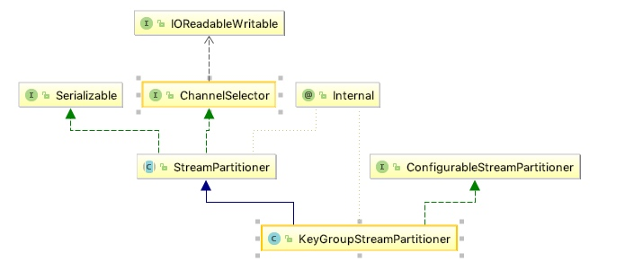
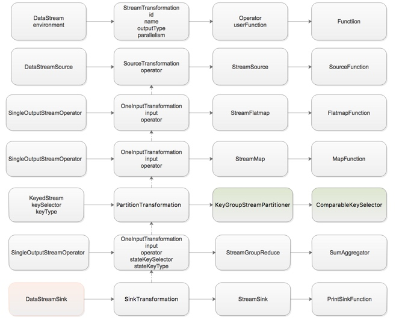
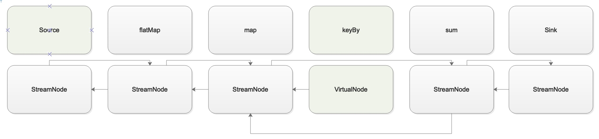
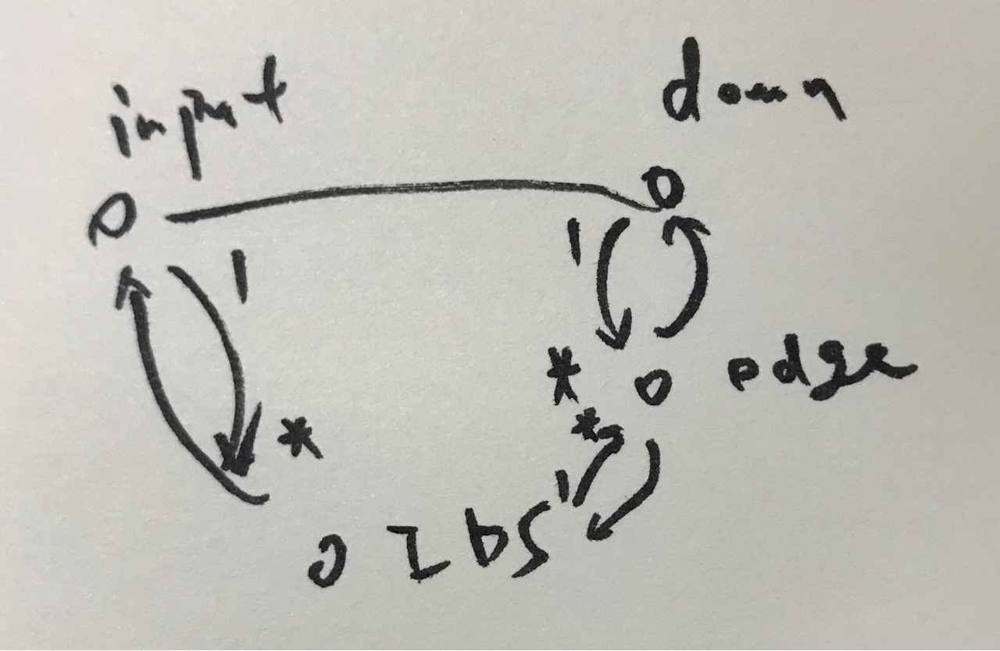
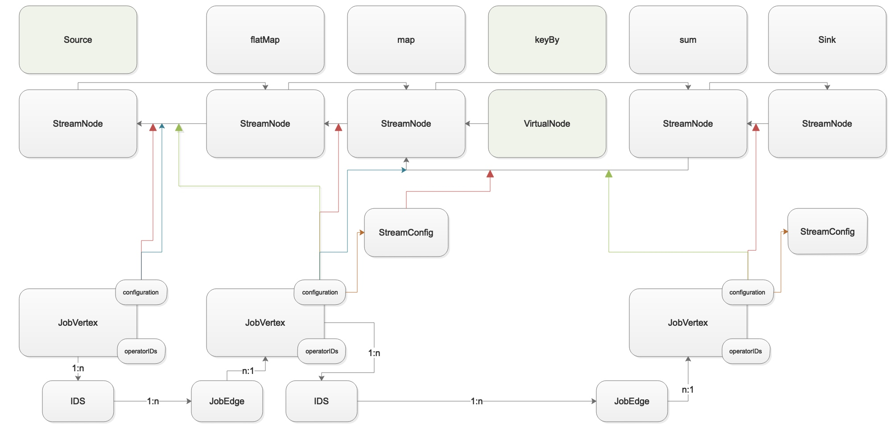

Flink源码阅读笔记–DAG篇
WordCount程序总览
1 | val env = StreamExecutionEnvironment.getExecutionEnvironment |
可以看到一个WordCount程序大概分为5个部分
- 构建ExecutionEnvironment
- 添加Source
- 中间做各种Transformation
- 添加Sink
- ExecutionEnvironment.execute方法
构建ExecutionEnvironment
1 | def getExecutionEnvironment: StreamExecutionEnvironment = { |
核心是StreamExecutionEnvironment.getExecutionEnvironment1
2
3
4
5
6
7
8
9
10
11
12
13
14
15
16
17
18public static StreamExecutionEnvironment getExecutionEnvironment() {
if (contextEnvironmentFactory != null) {
return contextEnvironmentFactory.createExecutionEnvironment();
}
// because the streaming project depends on "flink-clients" (and not the other way around)
// we currently need to intercept the data set environment and create a dependent stream env.
// this should be fixed once we rework the project dependencies
ExecutionEnvironment env = ExecutionEnvironment.getExecutionEnvironment();
if (env instanceof ContextEnvironment) {
return new StreamContextEnvironment((ContextEnvironment) env);
} else if (env instanceof OptimizerPlanEnvironment || env instanceof PreviewPlanEnvironment) {
return new StreamPlanEnvironment(env);
} else {
return createLocalEnvironment();
}
}
createLocalEnvironment返回LocalStreamEnvironment。所有的都用默认，只是给ExecutionConfig设置了并行度
| 类 | 属性 |
|---|---|
| LocalStreamEnvironment | Configuration |
| StreamExecutionEnvironment | ExecutionConfig |
| StreamExecutionEnvironment | CheckpointConfig |
| StreamExecutionEnvironment | transformations |
| StreamExecutionEnvironment | bufferTimeout |
TIPS:ExecutionConfig的parallelism会带到Transformation里面作为默认并行度。
添加Source
1 | public <OUT> DataStreamSource<OUT> addSource(SourceFunction<OUT> function, String sourceName, TypeInformation<OUT> typeInfo) { |
具体：在其中先用StreamSource封装了function，然后用SourceTransformation封装了StreamSource，最后用DataStreamSource封装了SourceTransformation。
结果：StreamExecutionEnvironment.addSource最终返回一个DataStreamSource，这个是一个继承于DataStream的类。
DataStream -> Transformation -> Operator -> Function
flatMap算子
1 | def flatMap[R: TypeInformation](fun: T => TraversableOnce[R]): DataStream[R] = { |
具体：
- 先用FlatMapFunction封装自定义函数，然后调用DataStream.flatMap(FlatMapFunction)。
- 用StreamFlatMap封装FlatMapFunction；调用DataStream.transform(transformation的名字、输出类型、Operator)。
- 调用DataStream.transform
结果：最终返回一个SingleOutputStreamOperator，这个是一个继承于DataStream的类。
TIPS: DataStream.transform做了：
- 根据Operator生成OneInputTransformation
- 返回SingleOutputStreamOperator
- 把OneInputTransformation加入StreamExecutionEnvironment
map算子
1 | def map[R: TypeInformation](fun: T => R): DataStream[R] = { |
过程：
- 先用MapFunction封装自定义函数，然后调用DataStream.map(MapFunction）。
- 用StreamMap封装MapFunction；调用DataStream.transform(transformation的名字、输出类型、Operator)。
- 调用DataStream.transform
结果：最终返回一个SingleOutputStreamOperator，这个是一个继承于DataStream的类。
keyBy算子
1 | public KeyedStream<T, Tuple> keyBy(int... fields) { |
先创建Keys.ExpressionKeys封装了总的类型和key字段类型，然后调用keyBy的重载1
2
3
4private KeyedStream<T, Tuple> keyBy(Keys<T> keys) {
return new KeyedStream<>(this, clean(KeySelectorUtil.getSelectorForKeys(keys,
getType(), getExecutionConfig())));
}
在这个重载方法中，先调用KeySelectorUtil.getSelectorForKeys生成了ComparableKeySelector，然后调用KeyedStream构造函数1
2
3
4
5
6
7
8
9public KeyedStream(DataStream<T> dataStream, KeySelector<T, KEY> keySelector, TypeInformation<KEY> keyType) {
this(
dataStream,
new PartitionTransformation<>(
dataStream.getTransformation(),
new KeyGroupStreamPartitioner<>(keySelector, StreamGraphGenerator.DEFAULT_LOWER_BOUND_MAX_PARALLELISM)),
keySelector,
keyType);
}
生成KeyGroupStreamPartitioner(类似于Operator)封装了ComparableKeySelector，然后PartitionTransformation封装了KeyGroupStreamPartitioner，然后KeyedStream封装了PartitionTransformation。

KeyGroupStreamPartitioner的两个泛型来自于构造函数的第一个参数keySelector。KeyGroupStreamPartitioner<T, K> extends StreamPartitioner
StreamPartitioner
ChannelSelector<SerializationDelegate<StreamRecord
sum算子
1 | private def aggregate(aggregationType: AggregationType, position: Int): DataStream[T] = { |
- 首先生成SumAggregator(类似于Function)；然后生成StreamGroupedReduce(类似于Operator)。接着调用DataStream.transform(transformation的名字、输出类型、Operator)
- 在KeyedStream.transform方法中，先调用DataStream.transform；然后设置Transformation的stateKeySelector和stateKeyType属性。
print算子
1 | public DataStreamSink<T> print() { |
过程：
- 首先生成一个PrintSinkFunction(Function)；生成StreamSink封装PrintSinkFunction(Operator)
- 生成SinkTransformation封装StreamSink
- DataStreamSink封装Transformation返回。
- 将Transformation加入StreamExecutionEnvironment
最终形成的图如下所示：

StreamExecutionEnvironment.transformations中有4个transformation，分别是OneInputTransformation, OneInputTransformation, OneInputTransformation, SinkTransformation
Stream之间的区别在于，KeyedStream多了keySelector和keyType属性
Operator之间的区别在于,StreamGroupedReduce中serializer属性。
Function如果是RichFunction，会有StreamingRuntimeContext传入（包含Operator,RuntimeEnvironment），会有open方法
Operator在initializeState时，创建了StreamTaskStateInitializerImpl
StreamExecutionEnvironment.execute
1 | public JobExecutionResult execute(String jobName) throws Exception { |
StreamExecutionEnvironment.getStreamGraph
1 | @Internal |
委托StreamGraphGenerator.generate生成StreamGraph1
2
3public static StreamGraph generate(StreamExecutionEnvironment env, List<StreamTransformation<?>> transformations) {
return new StreamGraphGenerator(env).generateInternal(transformations);
}
- 做一个StreamGraphGenerator。其中给StreamGraph实例相应初始化
- 调用其generateInternal
| StreamGraph | 来源 |
|---|---|
| environment | environment |
| executionConfig | environment.ExecutionConfig |
| checkpointConfig | environment.CheckpointConfig |
| chaining | environment.isChainingEnabled |
| stateBackend | environment.defaultStateBackend |
| jobName | 外面带入 |
1 | private StreamGraph generateInternal(List<StreamTransformation<?>> transformations) { |
在generateInternal方法中，对于每个transformation，调用transform1
2
3
4
5
6
7
8
9
10
11
12
13
14
15
16
17
18
19
20
21
22
23
24
25
26
27
28
29
30
31
32
33
34
35
36
37
38
39
40
41
42
43
44
45
46
47
48
49
50
51
52
53
54
55
56
57
58
59
60
61
62
63
64
65
66
67
68
69
70private Collection<Integer> transform(StreamTransformation<?> transform) {
if (alreadyTransformed.containsKey(transform)) {
return alreadyTransformed.get(transform);
}
LOG.debug("Transforming " + transform);
if (transform.getMaxParallelism() <= 0) {
// if the max parallelism hasn't been set, then first use the job wide max parallelism
// from theExecutionConfig.
int globalMaxParallelismFromConfig = env.getConfig().getMaxParallelism();
if (globalMaxParallelismFromConfig > 0) {
transform.setMaxParallelism(globalMaxParallelismFromConfig);
}
}
// call at least once to trigger exceptions about MissingTypeInfo
transform.getOutputType();
Collection<Integer> transformedIds;
if (transform instanceof OneInputTransformation<?, ?>) {
transformedIds = transformOneInputTransform((OneInputTransformation<?, ?>) transform);
} else if (transform instanceof TwoInputTransformation<?, ?, ?>) {
transformedIds = transformTwoInputTransform((TwoInputTransformation<?, ?, ?>) transform);
} else if (transform instanceof SourceTransformation<?>) {
transformedIds = transformSource((SourceTransformation<?>) transform);
} else if (transform instanceof SinkTransformation<?>) {
transformedIds = transformSink((SinkTransformation<?>) transform);
} else if (transform instanceof UnionTransformation<?>) {
transformedIds = transformUnion((UnionTransformation<?>) transform);
} else if (transform instanceof SplitTransformation<?>) {
transformedIds = transformSplit((SplitTransformation<?>) transform);
} else if (transform instanceof SelectTransformation<?>) {
transformedIds = transformSelect((SelectTransformation<?>) transform);
} else if (transform instanceof FeedbackTransformation<?>) {
transformedIds = transformFeedback((FeedbackTransformation<?>) transform);
} else if (transform instanceof CoFeedbackTransformation<?>) {
transformedIds = transformCoFeedback((CoFeedbackTransformation<?>) transform);
} else if (transform instanceof PartitionTransformation<?>) {
transformedIds = transformPartition((PartitionTransformation<?>) transform);
} else if (transform instanceof SideOutputTransformation<?>) {
transformedIds = transformSideOutput((SideOutputTransformation<?>) transform);
} else {
throw new IllegalStateException("Unknown transformation: " + transform);
}
// need this check because the iterate transformation adds itself before
// transforming the feedback edges
if (!alreadyTransformed.containsKey(transform)) {
alreadyTransformed.put(transform, transformedIds);
}
if (transform.getBufferTimeout() >= 0) {
streamGraph.setBufferTimeout(transform.getId(), transform.getBufferTimeout());
}
if (transform.getUid() != null) {
streamGraph.setTransformationUID(transform.getId(), transform.getUid());
}
if (transform.getUserProvidedNodeHash() != null) {
streamGraph.setTransformationUserHash(transform.getId(), transform.getUserProvidedNodeHash());
}
if (transform.getMinResources() != null && transform.getPreferredResources() != null) {
streamGraph.setResources(transform.getId(), transform.getMinResources(), transform.getPreferredResources());
}
return transformedIds;
}
对于每种不同的transformation，调用不同的逻辑。
| Transformation | StreamNode |
|---|---|
| id | id |
| slotSharingGroup计算而来 | slotSharingGroup |
| coLocationGroupKey | coLocationGroup |
| operator | operator |
| name | operatorName |
| outputSelectors | |
| 根据不同的Transformation而不同 (SourceStreamTask,OneInputStreamTask) | jobVertexClass |
| input.getOutputType() | typeSerializerIn1 |
| outputType | typeSerializerOut |
| **以上为addOperator | |
| parallelism | parallelism |
| maxParallelism | maxParallelism |
| 如果Transformation的stateKeySelector有 | stateKeySerializer |
| bufferTimeout | bufferTimeout |
| uid | transformationUID |
| userProvidedNodeHash | userHash |
| minResources | minResources |
| preferredResources | preferredResources |
| 类型 | 行为 |
|---|---|
| SourceTransformation | ①streamGraph.addOperator |
| OneInputTransformation | ①transform(input) ②streamGraph.addOperator ③streamGraph.addEdge，在这个节点的input和它本身之间建立边 |
| PartitionTransformation | ①transform(input) ②对每个input新建一个虚拟ID并调用streamGraph.addVirtualPartitionNode。 在input和其对应的虚拟节点之间建立关联 (virtualId,originalId,partitioner) ③返回virtualId |
| SinkTransformation | ①transform(input) ②streamGraph.addOperator ③streamGraph.addEdge，在这个节点的input和它本身之间建立边 |
在StreamGraph.addEdge中主要是调用了addEdgeInternal。在addEdgeInternal中对于一般的input节点来说，先确认Partitioner，然后再创建StreamEdge，最终把StreamEdge加入到两端的StreamNode中。对于input节点是虚拟节点的情况，重新计算背后指向的真正节点，并递归调用addEdgeInternal。
最终生成的StreamGraph如下图所示，总之在这一步：由StreamExecutionEnvironment的局部Transformation出发，由Transformation节点映射生成StreamNode，但有些Transformation没有进入StreamGraph；确定了边，边决定了数据路由到下游的方式。

由StreamGraph生成JobGraph
1 | private JobGraph createJobGraph() { |
先生成StreamingJobGraphGenerator（在其中实例化了JobGraph），然后调用其createJobGraph方法。
| JobGraph | 来源 |
|---|---|
| jobId | new JobID() |
| jobName | StreamGraph.jobName |
| serializedExecutionConfig | StreamGraph.executionConfig |
接着在createJobGraph中，首先defaultStreamGraphHasher.traverseStreamGraphAndGenerateHashes(streamGraph);为每个StreamGraph节点生成Hash码。接着调用setChaining
调用setChaining
1 | private void setChaining(Map<Integer, byte[]> hashes, List<Map<Integer, byte[]>> legacyHashes, Map<Integer, List<Tuple2<byte[], byte[]>>> chainedOperatorHashes) { |
在setChaining中，从每个source出发，调用createChain
1 | private List<StreamEdge> createChain( |
注意，生成JobVertex的原则是根据startNodeId来划分的。
首先创建JobVertex，对应的属性和来源分别为：
| JobVertex | 来源 |
|---|---|
| id | JobVertexID(hash) |
| operatorIDs | 串上的OperatorID(hash)集合 |
| name | StreamNode.operatorName串 |
| minResources | StreamNode.minResources串 |
| preferredResources | StreamNode.preferredResources 串 |
| invokableClassName | StreamNode.jobVertexClass |
| isStoppable | StreamNode.jobVertexClass推导而来 |
| parallelism | StreamNode.parallelism |
| maxParallelism | StreamNode.maxParallelism |
| results | IDS集合 |
| inputs | JobEdge集合 |
接着创建StreamConfig，其值和来源分别为：
| StreamConfig | 来源 |
|---|---|
| setVertexID | StreamNode.id |
| setBufferTimeout | StreamNode.bufferTimeout |
| setTypeSerializerIn1 | StreamNode.typeSerializerIn1 |
| setTypeSerializerIn2 | StreamNode.typeSerializerIn2 |
| setTypeSerializerOut | StreamNode.typeSerializerOut |
| setStreamOperator | StreamNode.operator |
| setOutputSelectors | StreamNode.outputSelectors |
| setNumberOfOutputs | 每个StreamNode的outEdges为断的数量 |
| setNonChainedOutputs | 每个StreamNode的outEdges为断的 |
| setChainedOutputs | 每个StreamNode的outEdges为非断的 |
| setTimeCharacteristic | StreamGraph.Environment.timeCharacteristic |
| setStateBackend | StreamGraph.stateBackend |
| setStatePartitioner | StreamNode.statePartitioner1 |
| setStatePartitioner | StreamNode.statePartitioner2 |
| setStateKeySerializer | StreamNode.stateKeySerializer(这个属性决定了一个算子有没有keyedState) |
| setOperatorID | OperatorID(hash) |
| setChainIndex | 在链上的位置，从0开始 |
| setOperatorName | StreamNode.operatorName |
| *setOutEdgesInOrder | 传递断边集合StreamEdge |
| *setOutEdges | StreamNode的所有出边 |
| *setTransitiveChainedTaskConfigs | 链上的StreamConfig,不包括源 |
| setNumberOfInputs | JobVertex的输入数 |
| *setInPhysicalEdges | 以这个节点为target的断StreamEdge集合 |
connect方法核心：1
2
3
4jobEdge = downStreamVertex.connectNewDataSetAsInput(
headVertex,
DistributionPattern.ALL_TO_ALL,
ResultPartitionType.PIPELINED_BOUNDED);
调用下游节点JobVertex.connectNewDataSetAsInput1
2
3
4
5
6
7
8
9
10
11
12public JobEdge connectNewDataSetAsInput(
JobVertex input,
DistributionPattern distPattern,
ResultPartitionType partitionType) {
IntermediateDataSet dataSet = input.createAndAddResultDataSet(partitionType);
JobEdge edge = new JobEdge(dataSet, this, distPattern);
this.inputs.add(edge);
dataSet.addConsumer(edge);
return edge;
}
注意，这里是下游主动去连上游，而不同的下游在连上游时虽然上游的输出有可能只有一个，但是还是会为每个下游创建一个IDS，每个IDS的consumer只有一个。
调用上游的createAndAddResultDataSet创建了一个IDS。
然后创建JobEdge连接IDS和下游JobVertex。
最后给IDS增加consumer，给下游JobVertex增加input。
IDS上面有一个属性是partitionType（值为ResultPartitionType.PIPELINED_BOUNDED）；JobEdge上有一个属性是DistributionPattern（值为DistributionPattern.ALL_TO_ALL）

setPhysicalEdges
为对应节点（JobVertex）的StreamConfig设置setInPhysicalEdges， List[StreamEdge]
setSlotSharingAndCoLocation
为JobVertex设置setSlotSharingGroup
设置Checkpoint
1 | JobCheckpointingSettings settings = new JobCheckpointingSettings( |
为JobGraph设置JobCheckpointingSettings
总之，JobGraph在StreamGraph的基础上，形成了这样的数据结构：

每个StreamNode对应StreamConfig。
每个JobVertex的StreamConfig有属性指向链上的StreamConfig集合。
每个JobVertex的configuration中有属性指向出断。
每个JobVertex的configuration中有属性指向入断。
每个StreamConfig有属性指向对应StreamNode的出边。